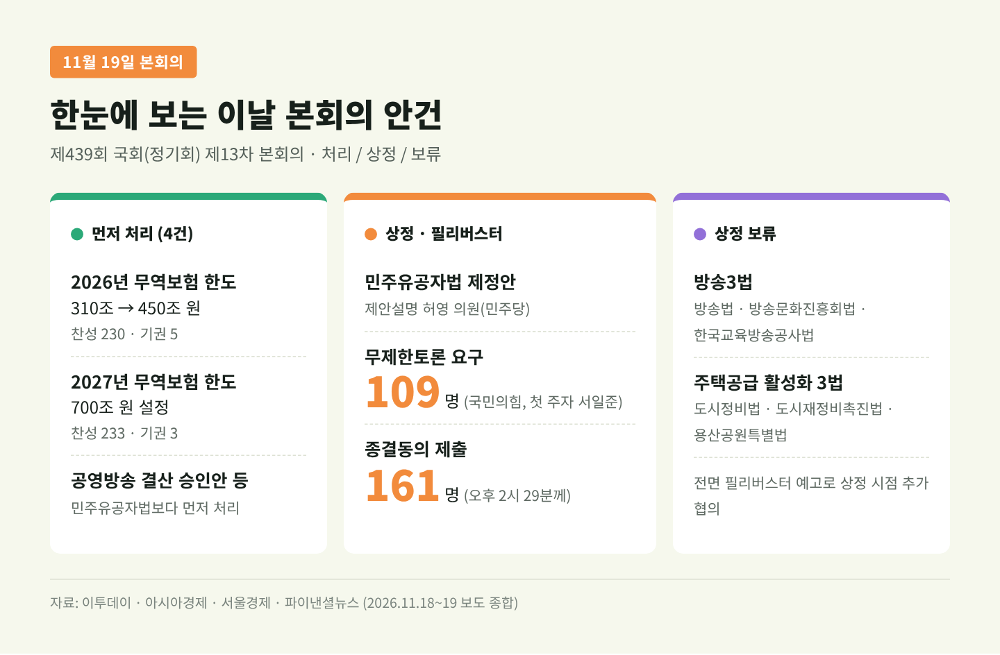
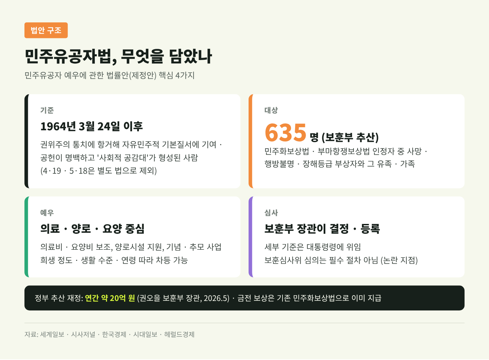
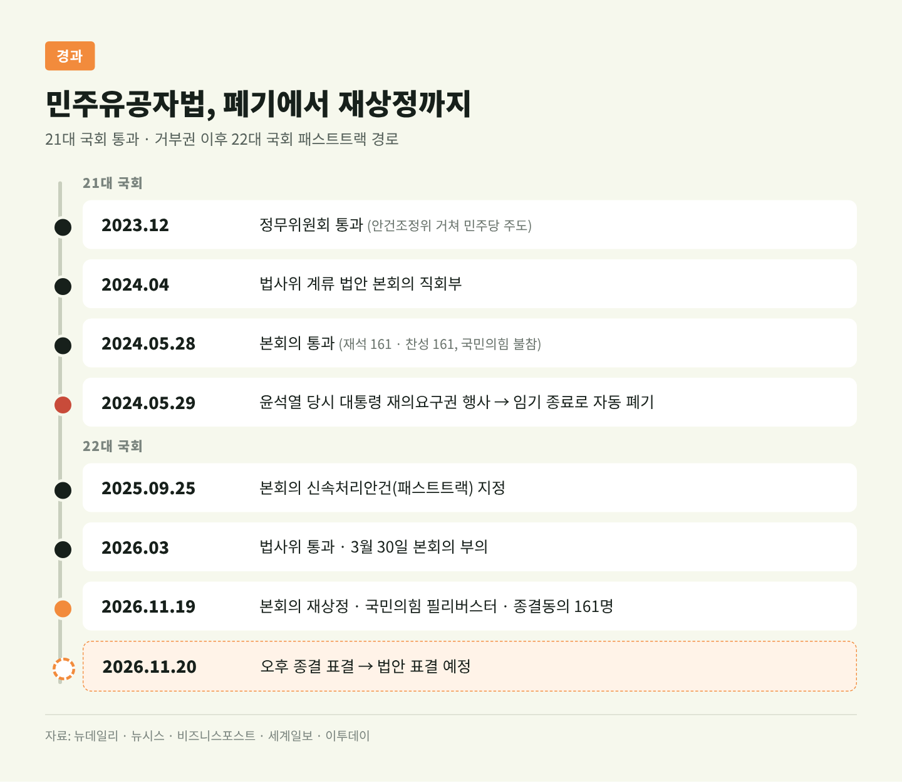
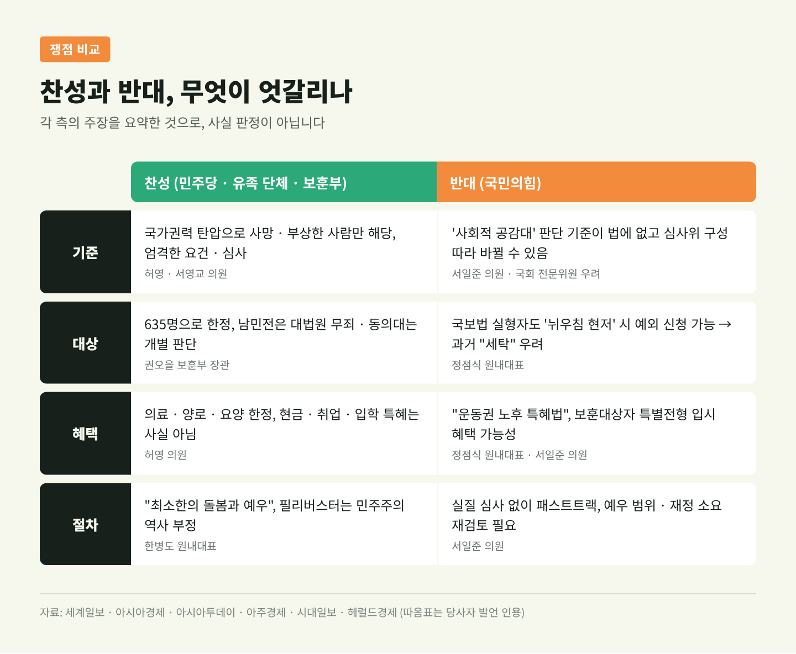
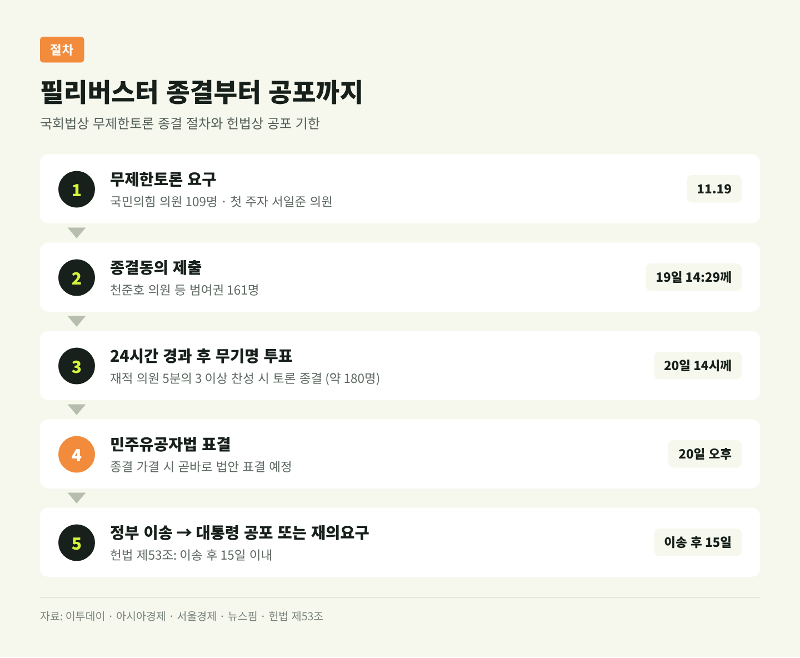
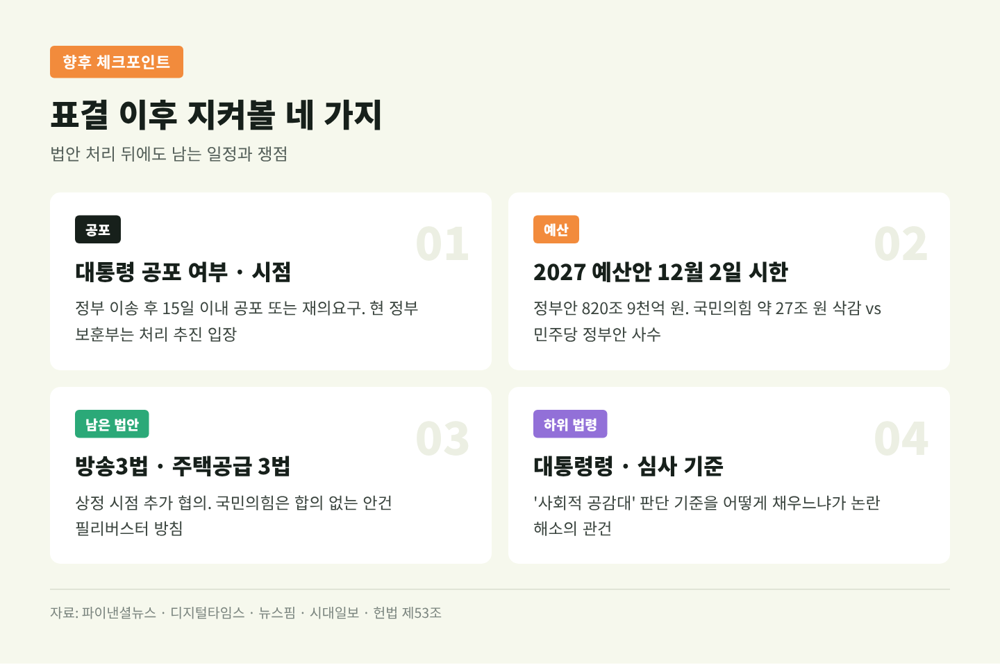

민주유공자법 2년 만에 재상정…국민의힘 필리버스터, 20일 표결 전망

이번 글에서는 11월 19일 국회 본회의에 다시 오른 민주유공자법과, 이를 막기 위한 국민의힘의 필리버스터를 정리해 보겠습니다. 법안에 무엇이 담겼는지, 2년 전 왜 폐기됐는지, 양측이 무엇을 두고 부딪히는지를 차례로 짚습니다.
세 줄 요약
- 민주당 주도로 '민주유공자 예우에 관한 법률안'이 19일 본회의에 상정됐고, 국민의힘 의원 109명이 무제한 토론(필리버스터)을 요구했습니다.
- 범여권 161명이 오후 2시 29분께 토론 종결동의안을 내, 24시간이 지난 20일 오후 2시께 종결 표결과 법안 표결이 이어질 전망입니다.
- 대상은 민주화운동 사망·행방불명·부상자 635명과 그 가족이며, 지원은 의료·양로·요양 중심입니다. 쟁점은 '인정 기준'과 '특혜 여부'입니다.
■ 19일 본회의에서 무슨 일이 있었나
19일 오후 열린 제439회 국회(정기회) 제13차 본회의에서 조정식 국회의장이 민주유공자법 제정안을 상정했습니다. 2024년 5월 본회의를 통과했다가 폐기된 뒤, 약 2년 만에 다시 본회의 문턱에 선 것입니다.
제안 설명은 민주당 허영 의원이 맡았습니다. 그는 이 법을 "국가가 뒤늦게라도 책임을 다하는 법"이라고 소개했습니다(아시아투데이). 현금 지급, 자녀 취업, 대학 특혜 입학 같은 이야기는 사실이 아니라는 점도 강조했습니다(아시아경제).
상정 직후 국민의힘 의원 109명이 무제한 토론을 요구했습니다. 첫 주자는 소관 상임위인 정무위원회의 야당 간사 서일준 의원입니다. 민주당은 곧바로 맞대응했습니다. 천준호 의원 등 161명이 오후 2시 29분께 토론 종결동의안을 제출했습니다(이투데이).
이날 본회의에서 다른 안건이 없었던 것은 아닙니다. 민주유공자법에 앞서 4개 안건이 먼저 처리됐습니다. 2026년도 무역보험계약 체결 한도를 310조 원에서 450조 원으로 늘리는 안(찬성 230, 기권 5)과, 2027년도 한도를 700조 원으로 정하는 안(찬성 233, 기권 3)이 대표적입니다. 공영방송 결산 승인안도 이 묶음에 들어갔습니다(이투데이).
반대로 올라가지 못한 법안도 있습니다. 방송3법(방송법·방송문화진흥회법·한국교육방송공사법 개정안)과 주택공급 활성화 3법(도시정비법·도시재정비촉진법·용산공원특별법 개정안)입니다. 국민의힘이 합의 없는 모든 안건에 필리버스터를 예고하자, 한꺼번에 올리면 본회의가 며칠씩 이어질 수 있다는 판단이 작용했습니다. 박성준 민주당 수석대변인은 "4박 5일" 본회의가 될 수 있다는 부담을 털어놓았습니다(파이낸셜뉴스).

■ 왜 이 법안이 주목받나
민주유공자법은 단순한 지원 법안 이상으로 읽힙니다. '민주화운동을 국가가 어떻게 기억하고 예우할 것인가'라는 오래된 질문이 걸려 있기 때문입니다.
이 법은 20여 년 넘게 발의와 폐기를 되풀이해 왔습니다. 첫 발의 시점은 매체마다 1998년, 16대 국회 등으로 조금씩 다르게 전해지지만, 한 세대 가까이 묵은 숙제라는 점은 같습니다. 국회 본관 앞에서는 전국민족민주유가족협의회(유가협) 회원들이 노숙 농성을 이어 왔고, 김민석 민주당 대표는 12일 농성장을 찾아 정기국회 안 처리를 약속했습니다(연합뉴스).
정치적 상징성도 큽니다. 2024년에는 당시 대통령의 거부권으로 무산됐습니다. 지금은 같은 법을 추진하는 쪽이 여당이 됐습니다. 예전엔 '야당 단독 처리 → 거부권'의 구도였다면, 지금은 '여당 주도 처리 → 야당 필리버스터'로 무대가 바뀐 셈입니다.
■ 법안에는 무엇이 담겼나
법안이 정한 민주유공자의 기준은 이렇습니다. 1964년 3월 24일 이후 권위주의 통치에 항거해 자유민주적 기본질서 확립에 기여한 사람 가운데, 공헌이 명백하고 '사회적 공감대'가 형성된 사람입니다(시사저널·한국경제). 이미 별도 법이 있는 4·19혁명과 5·18민주화운동은 빠집니다.
대상 범위는 생각보다 좁습니다. 민주화보상법이나 부마항쟁보상법으로 '관련자' 인정을 받은 사람 가운데 사망자, 행방불명자, 장해등급을 받은 부상자만 해당합니다. 국가보훈부는 이 인원을 635명으로 추산했습니다(세계일보·연합뉴스). 기존 보상법은 유죄판결, 해직, 학사징계, 구류, 수배 같은 불이익을 받은 사람도 관련자로 인정했는데, 이번 법은 그중 일부만 추린 구조입니다(노컷뉴스).
지원은 의료·양로·요양이 중심입니다. 본인과 유족·가족에게 의료비와 요양비를 보조하고 양로시설 이용을 돕습니다. 기념·추모 사업 근거도 둡니다(뉴스핌·아주경제). 예우 수준은 희생과 공헌의 정도, 생활 수준, 연령에 따라 달리할 수 있습니다.
재정 규모는 크지 않다는 것이 정부 설명입니다. 권오을 보훈부 장관은 지난 5월 연간 약 20억 원이 들 것으로 추산했습니다. 금전 보상은 민주화보상법으로 이미 이뤄졌다는 이유에서입니다(헤럴드경제).
심사와 등록은 보훈부 장관이 대통령령에 따라 맡습니다. 바로 이 대목에서 논란이 시작됩니다.

■ 2년 전에는 왜 폐기됐나
경과를 시간 순으로 보면 이렇습니다.
- 2023년 12월 21대 국회 정무위 통과. 안건조정위원회를 거쳐 민주당 주도로 처리됐습니다(뉴데일리).
- 2024년 4월 법사위에 묶여 있던 법안이 본회의에 직회부됐습니다.
- 2024년 5월 28일 본회의 통과. 국민의힘이 불참한 가운데 재석 161명 전원 찬성이었습니다(뉴시스).
- 2024년 5월 29일 윤석열 당시 대통령이 전세사기특별법 개정안 등 다른 3개 법안과 함께 재의요구권을 행사했습니다. 21대 국회 임기 마지막 날이어서 재표결 없이 자동 폐기됐습니다(뉴데일리).
당시 정부는 재정 부담과 사회적 갈등을 이유로 들었습니다. 민주유공자법에 대해서는 대상자 명단과 공적이 공개되지 않는다는 점을 문제 삼았습니다. 명확한 결정 기준이 없다는 비판도 함께 거론됐습니다(시대일보).
22대 국회에서는 패스트트랙 경로를 탔습니다.
- 2025년 9월 25일 본회의에서 신속처리안건으로 지정됐습니다. 함께 지정된 법안들은 각각 180~182표의 찬성을 얻었습니다(비즈니스포스트).
- 2026년 3월 법사위를 여당 주도로 통과했고, 3월 30일 본회의에 부의됐습니다(세계일보·이투데이).
- 2026년 11월 5일·12일 상정이 거론됐지만 의사일정 합의가 이뤄지지 않았습니다.
- 2026년 11월 19일 본회의 상정, 필리버스터 돌입.
공교롭게도 2024년 통과 때의 찬성 인원과 이번 종결동의 서명 인원이 똑같이 161명입니다.

■ 찬성 측 논리: "최소한의 돌봄과 예우"
민주당과 유족 단체의 논리는 '늦었지만 국가가 책임을 져야 한다'는 데 모입니다.
한병도 민주당 원내대표는 이 법을 트라우마와 생활고에 시달린 희생자·유가족에게 "최소한의 돌봄과 예우를 보장하는 법"이라고 설명했습니다(세계일보). 필리버스터에 대해서는 "민주주의 역사를 부정하고 독재의 편에 서겠다는 것과 다름없다"고 비판했습니다.
대상이 엄격하다는 점도 강조합니다. 서영교 민주당 의원은 국가권력의 탄압으로 숨지거나 다치거나 일정 등급 이상 장해를 입은 사람만 해당한다고 말했습니다(시대일보). 민주당 측은 과거 '셀프 보상법'이라는 비판을 반영해 지원을 최소화했다고도 설명합니다(노컷뉴스).
정부도 같은 입장입니다. 권오을 장관은 대상이 630여 명으로 엄격히 제한돼 있다고 말했습니다. 논란이 된 남민전 사건은 대법원 무죄 판결이 났고, 동의대 사건은 개별 관여 정도와 부상 기준으로 판단한다고 반박했습니다(헤럴드경제). 이 법이 통과되면 박종철·이한열·전태일 열사 등이 민주유공자로 인정받게 된다는 점도 찬성 측이 자주 드는 사례입니다.
■ 반대 측 논리: "기준이 불분명하다"
국민의힘은 민주화운동 자체를 부정하는 것이 아니라고 선을 긋습니다. 첫 토론자 서일준 의원은 "민주화운동에 반대하려고 이 자리에 선 것이 아니"라고 말했습니다(아시아경제). 희생을 존중하는 것과 이 법안에 찬성하는 것은 다른 문제라는 논리입니다.
핵심 반대 근거는 '기준'입니다. '사회적 공감대'를 무엇으로 판단하는지 법에 구체적으로 적혀 있지 않다는 지적입니다. 국회 전문위원도 보훈심사위원회 위원 구성이 바뀌면 기준이 달라질 수 있다고 우려했지만, 이 의견은 법안에 반영되지 않았습니다(시대일보). 보훈심사위 심의가 필수 절차가 아니라는 점도 문제로 꼽혔습니다.
국가보안법 위반자 문제도 있습니다. 실형이 확정된 사람은 원칙적으로 제외되지만, 뉘우친 정도가 현저하면 예외적으로 등록을 신청할 수 있게 돼 있습니다(시대일보). 정점식 국민의힘 원내대표는 이를 두고 과거를 "세탁"하는 통로가 될 수 있다고 주장했고, 법안 전체를 "운동권 노후 특혜법"이라고 불렀습니다(아주경제·뉴스핌).
입시 혜택 논란은 양측 주장이 정면으로 엇갈립니다. 서일준 의원은 유공자와 자녀가 대학의 '국가보훈대상자 특별전형'으로 혜택을 받을 수 있다고 문제를 제기했습니다(시대일보). 민주당은 법안에 그런 내용이 없다며 근거 없는 주장이라고 반박합니다(한국경제).
절차에 대한 불만도 있습니다. 서 의원은 실질적인 심사 없이 패스트트랙으로 본회의까지 왔다며, 인정 기준과 예우 범위, 재정 소요를 다시 따져야 한다고 주장했습니다(아시아투데이). 2023년 정무위 단계에서 국민의힘은 민주화보상법으로 이미 1,169억 원이 보상됐다는 점을 들며 기존 유공자와의 형평성도 거론했습니다(뉴데일리).
보훈단체들이 이번 회기에 공식 성명을 냈는지는 확인되지 않았습니다. 다만 권 장관이 법안 지연의 원인으로 '정서적 반대'를 꼽은 점은, 보훈 현장의 시선이 여전히 갈려 있음을 보여줍니다.

■ 필리버스터는 언제 끝나나
무제한 토론은 무한정 이어지지 않습니다. 국회법상 종결동의가 제출되고 24시간이 지나면 무기명 투표로 종결 여부를 정합니다. 재적 의원 5분의 3 이상이 찬성하면 토론이 끝나고, 곧바로 법안 표결로 넘어갑니다.
이번에는 종결동의가 19일 오후 2시 29분께 제출됐습니다. 따라서 종결 표결은 20일 오후 2시 무렵 가능합니다. 5분의 3은 대략 180명 안팎입니다(뉴스핌은 180명으로 표기). 2025년 10월 기준 범여권 의석이 188석으로 집계된 만큼(노컷뉴스), 종결과 법안 통과 가능성은 높다는 관측이 많습니다. 지난해 12월 비슷한 상황에서도 필리버스터는 24시간 뒤 종결 표결로 마무리됐습니다(메트로신문).

■ 표결 이후 남는 쟁점
첫째, 대통령 공포입니다. 헌법 제53조에 따라 대통령은 국회에서 넘어온 법률안을 15일 안에 공포하거나 재의를 요구할 수 있습니다. 현 정부 보훈부가 직접 처리를 추진해 온 법안이라는 점에서, 2024년과 같은 거부권 국면이 되풀이될 가능성은 크지 않아 보입니다. 다만 공포 시점은 아직 확인되지 않았습니다.
둘째, 예산 정국과의 연동입니다. 2027년도 정부 예산안은 820조 9,000억 원으로 역대 최대 규모입니다. 국민의힘은 약 27조 원 삭감을, 민주당은 정부안 사수를 내걸고 있습니다(파이낸셜뉴스). 예결위는 11월 30일 전체회의, 12월 2일 법정 시한 내 본회의 처리를 목표로 하고 있습니다(디지털타임스). 쟁점 법안마다 필리버스터가 반복되면 본회의 일정이 빠듯해지고, 예산 협상 분위기에도 그림자가 드리울 수 있습니다.
셋째, 밀려난 법안들입니다. 방송3법과 주택공급 3법은 상정 시점을 국민의힘과 더 협의하기로 했습니다(뉴스핌). 한병도 원내대표는 필리버스터 때문에 도시정비법 같은 주택공급 민생 입법이 막혀 있다고 주장합니다. 국민의힘은 합의 없는 안건에는 계속 필리버스터로 대응한다는 방침입니다.
넷째, 하위 법령과 심사 기준입니다. 법이 통과돼도 '사회적 공감대'를 판단할 구체적 기준은 대통령령과 보훈부 심사에서 채워집니다. 반대 측이 제기한 우려가 실제로 해소되는지는 이 단계에서 판가름 날 가능성이 큽니다.

정리하면 이렇습니다. 이번 표결은 사실상 결과가 예상되는 싸움이지만, 질문은 표결 뒤에도 남습니다. — 예우의 정당성과 기준의 투명성은 서로를 대신할 수 없습니다. 20일 표결 이후 이 법이 오래 지속될 수 있느냐고 묻는다면, 결국 심사 기준을 얼마나 납득할 만하게 채우느냐에 달려 있다고 답하겠습니다.
참고 자료
- 아시아경제, 「민주유공자법」 관련 보도 (2026-11-19) https://view.asiae.co.kr/article/2026111914494359695
- 세계일보, 「與, 유공자법 본회의 상정… 野 '필버' 돌입」 (2026-11-19) https://www.segye.com/newsView/20261119516131
- 경향신문 (2026-11-19) https://www.khan.co.kr/article/202611190731001/
- 아시아투데이, 「2년 만에 본회의 재상정된 '민주유공자법'…野, 필버로 맞불」 (2026-11-19) https://www.asiatoday.co.kr/kn/view.php?key=20261119010007658
- 이투데이 (2026-11-19) https://www.etoday.co.kr/news/view/2650547
- 뉴스핌 (2026-11-19) https://www.newspim.com/news/view/20261119000792
- 서울경제 (2026-11-19) https://www.sedaily.com/article/20116607
- 시사저널 (2026-11-19) https://www.sisajournal.com/news/articleView.html?idxno=394660
- 아주경제 (2026-11-19) https://ajunews.com/view/20261119150703339
- 한국경제 (2026-11-19) https://www.hankyung.com/article/202611197769H
- 시대일보 (2026-11-19) https://www.sidae.com/article/2026111913445672619
- 시대일보 (2026-11-11) https://www.sidae.com/article/2026111114360955020
- 파이낸셜뉴스 (2026-11-18) https://www.fnnews.com/news/202611181234046312
- 연합뉴스·코리안센터 전재 (2026-11-12) https://www.koreancenter.or.kr/news/articleView.html?idxno=1438411
- 헤럴드경제 (2026-05-28) https://www.heraldk.com/article/2026052821471168606
- 노컷뉴스 (2025-10-09) https://www.nocutnews.co.kr/news/6409934
- 비즈니스포스트 (2025-09-25) https://www.businesspost.co.kr/BP?command=article_view&num=413618
- 뉴데일리 (2024-05-29) https://www.newdaily.co.kr/site/data/html/2024/05/29/2024052900075.html
- 뉴시스 (2024-05-28) https://www.newsis.com/view/NISX20240528_0002752059
- 뉴데일리 (2023-12-14) https://www.newdaily.co.kr/site/data/html/2023/12/14/2023121400275.html
- 파이낸셜뉴스 (2026-11-09) https://www.fnnews.com/news/202611090500558809
- 디지털타임스 (2026-11-09) https://www.dt.co.kr/article/12093808
- 메트로신문 (2025-12-24) https://www.metroseoul.co.kr/article/20251224500402